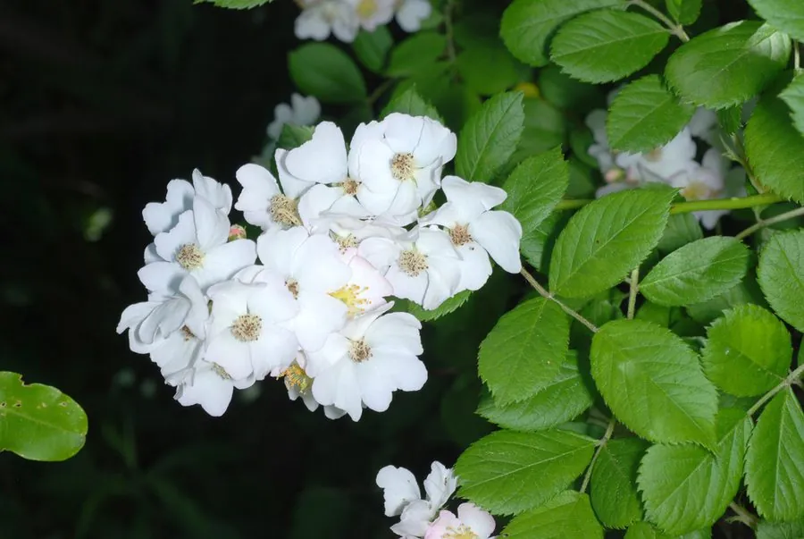

灌木与花木 · 植物界
野蔷薇 Rosa multiflora

蔷薇科落叶攀援灌木，初夏开白色小花，花量繁密、香气浓郁，是篱垣绿化与蔷薇嫁接砧木的优良树种。
- 分类
- 门被子植物门纲木兰纲目蔷薇目科蔷薇科属蔷薇属
- 栖息环境
- 山坡灌丛、溪边、路旁与篱垣，喜光也耐半阴
- 地理分布
- 中国华北、华东、华中至西南；朝鲜半岛、日本
- 保护级别
- 暂无评估；中国未列入国家重点保护野生植物名录
物种志
野蔷薇为蔷薇科蔷薇属落叶攀援灌木，高 1–3 米，枝条细长，具皮刺。叶互生，奇数羽状复叶，小叶 5–9 枚，倒卵形至椭圆形，边缘具锯齿。伞房状圆锥花序顶生，花小，白色，花瓣 5 枚，香气浓郁，花期 5–6 月；果实为蔷薇果，球形，成熟时红褐色，果期 9–10 月。
野蔷薇原产中国华北、华东、华中至西南各地，朝鲜半岛、日本也有分布，生于山坡灌丛、溪边与路旁。它喜光，也耐半阴，耐寒、耐旱，对土壤要求不严。花量繁密、香气浓郁，是篱垣绿化与花墙的常用树种；根系发达，也是月季等蔷薇属植物常用的嫁接砧木。栽培以扦插和压条繁殖为主，需定期修剪以保持通风，并防治白粉病与蚜虫。
形态与习性
- 株高攀援高 1–3 米
- 花期5–6 月，白色小花、香气浓郁
- 果期9–10 月，蔷薇果红褐色
- 光照喜光，也耐半阴
- 水分耐旱，忌积水
- 土壤对土壤要求不严
- 主要用途篱垣绿化，作月季嫁接砧木
趣味知识
- 野蔷薇花量极大，一株可开数百朵白色小花。
- 它的根系发达，是月季等蔷薇属植物常用的嫁接砧木。
- 野蔷薇的果实可提取维生素 C，但果肉少、口感差。
- 花香浓郁，可提取芳香油，也是重要的蜜源植物。